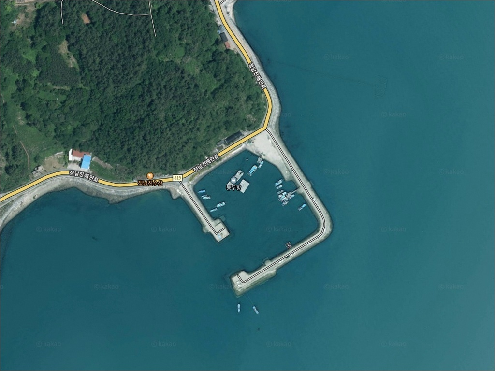
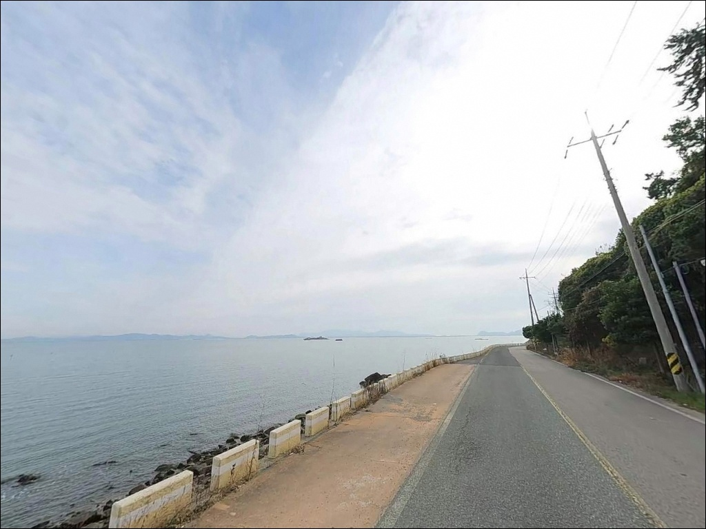
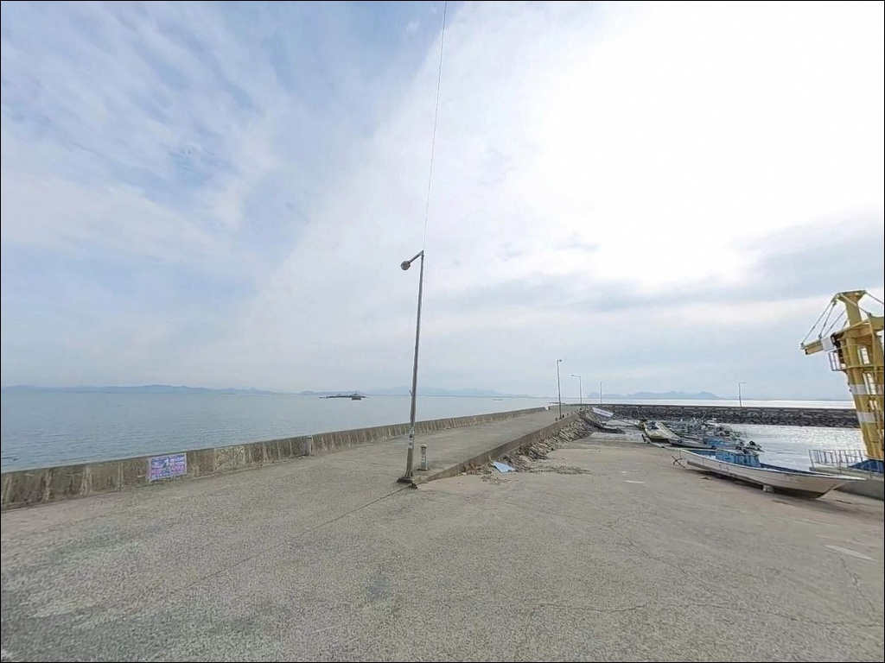
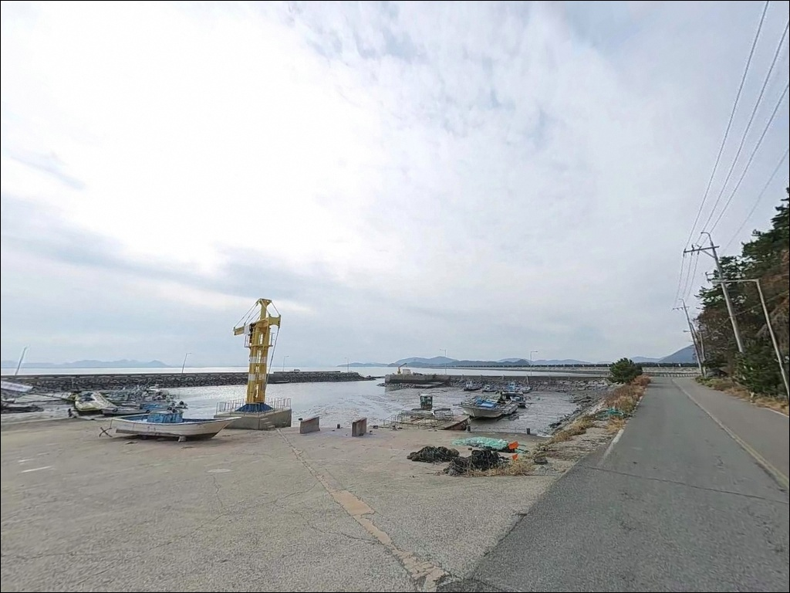
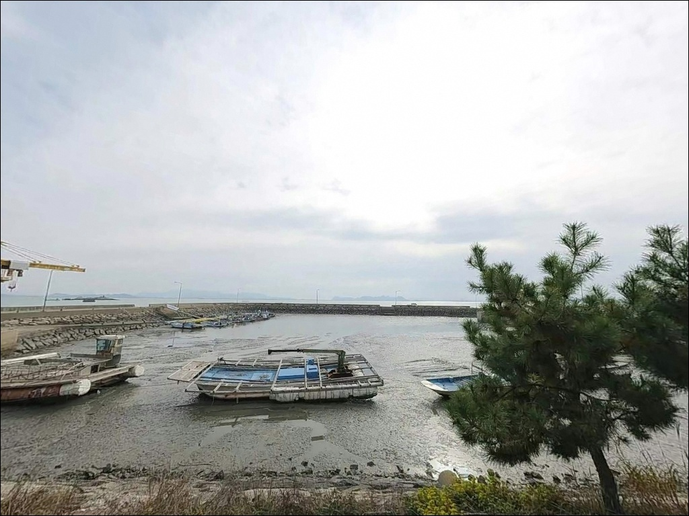
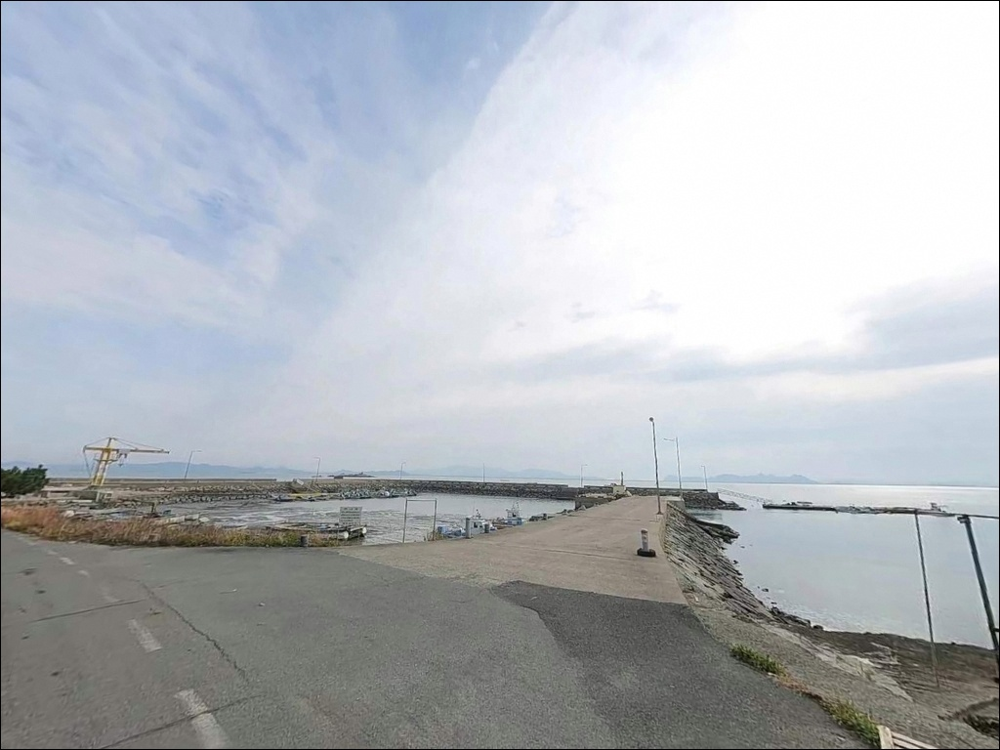
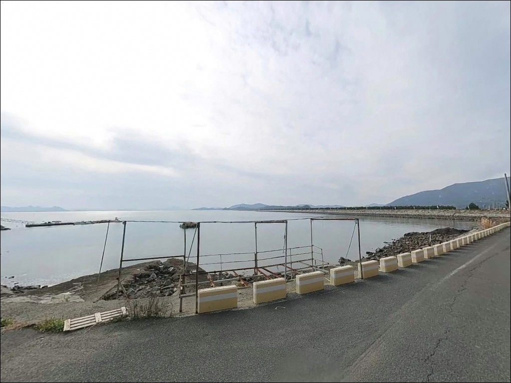
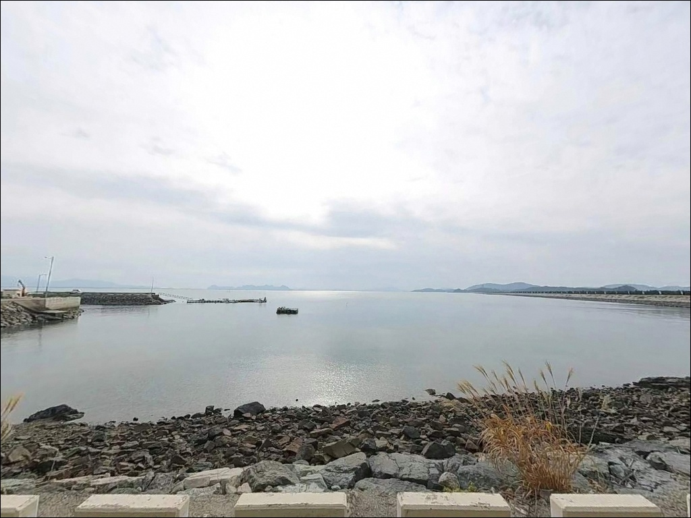
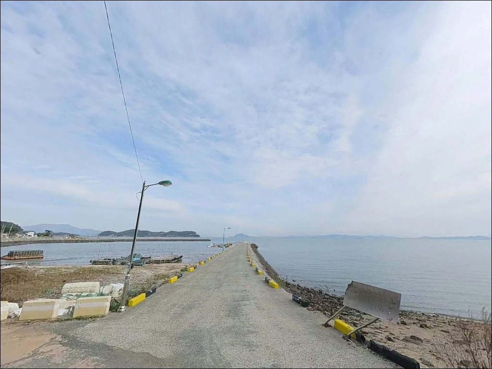

동두항, 전남 장흥군 천혜의 절경을 품은 해안 차박 낚시 장소
이 페이지에는 광고(제휴 링크 포함)가 있으며, 광고 링크를 통해 구매하면 운영자가 판매 수익 또는 수수료를 받을 수 있습니다. 포인트 사진: 카카오맵 스카이뷰·로드뷰. 이 페이지의 지도·사진 이미지는 카카오맵의 실제 서비스 이미지와 다를 수 있습니다.


포인트 안내
동두항
전남 장흥군 관산읍 신동리 산 97-3
득량만 내측 갯벌 포인트에서
물때를 맞추지 않고 간조 시간대에 진입하면
방파제 주변이 갯벌로 변해
낚시 자체가 성립하지 않습니다.
채비를 어디에 던져도 바닥이 드러난 수면에서
입질을 기대하기 어렵고,
왕복 이동 시간만 허비하는 결과로 이어집니다.
동두항은 장흥군 관산읍 신동리,
득량만 내측 만곡부 연안에 자리한 소규모 어항입니다.
외해와 직접 연결된 만 입구 방향으로
조류 흐름이 살아 있고,
방파제 차량 진입이 가능한 구조라
원투낚시 장비를 현장까지 곧바로
운반할 수 있는 편의성이 있습니다.
이 글은 동두항의
물때 기반 낚시 여건, 방파제 지형 구조,
진입 동선, 차박 체류 조건에 집중합니다.
조황 단정이나 특정 어종 보장은
이 글의 범위에 포함되지 않습니다.

1. 포인트 위치 및 진입 동선 분석
동두항은 관산읍 시가지에서
해안도로를 따라 단일선 포장도로로 진입합니다.
도로 전 구간이 포장되어 있으며,
승용차와 SUV 기준 교행이 가능한 폭입니다.
급경사나 비포장 구간 없이
방파제 초입까지 차량 직접 진입이 가능한 구조입니다.
다만 도로 폭이 좁은 구간이 일부 포함되어 있어
대형 캠핑카나 장축 차량은
교행 상황에서 어려움을 겪을 수 있습니다.
출발 전 위성지도로 진입로를 확인하고,
방파제 입구 공터에서 회차 여부를
먼저 판단하는 것이 안전합니다.
주차는 방파제 시작 지점 좌측 공터와
선착장 안벽을 따라 5~7대 수준의
공간 확보가 가능합니다.
낚시 자리 바로 뒤에 차량을 세울 수 있어
원투 채비 장비 운반이 매우 편리한 편입니다.
방파제 내부 도로 가장자리 구간도
어선 동선을 피해 단기 정차가 가능합니다.

2. 차박 환경 평가 및 야간 체류 여건
동두항은 방파제 초입 공터와 선착장 안벽 인근에
차량을 세울 수 있어
낚시와 차박을 동시에 운용하기 좋은 구조입니다.
방파제 내측과 초입 구간에는
어업 활동용 조명이 일부 설치되어 있어
야간 기본 시야 확보가 가능합니다.
방파제 끝단으로 나갈수록 조명 범위 밖이어서
개인 헤드랜턴은 반드시 지참해야 합니다.
신동리 마을과 인접한 소규모 어항으로
완전한 고립형 포인트는 아닙니다.
야간에도 일정 수준의 차량 통행과
마을 생활 소음이 있는 환경입니다.
프라이버시를 중시한다면
방파제 초입보다 선착장 안벽 뒤쪽
어선 동선에서 벗어난 구간을 우선으로 고릅니다.
득량만 내측 특성상 바람 차단이 어느 정도 이루어지지만,
만 입구 방향으로 바람이 들어오는
구조를 갖추고 있습니다.
야간 체류 전 풍향과 바람 세기를 확인하고,
차량 방향을 잡는 것이
체류 환경을 안정적으로 유지하는 방법입니다.


3. 주변 편의시설 및 인프라 현황
동두항 내부에는 공중화장실과 매점이 없습니다.
식수, 식량, 낚시 소품, 연료 모두
진입 전에 준비해야 합니다.
완전 자급 체제로 진입하는 것이 현실적인 포인트입니다.
관산읍 중심부까지 차로 약 10~15분 거리에
편의점, 마트, 식당, 주유소가 집중되어 있습니다.
부족한 물품이 생긴다면 이 구간을 거쳐
진입하는 동선이 효율적입니다.
정남진 전망대 방향으로도
소규모 식당 접근이 가능한 편입니다.
응급 상황에 대비해
비상약품과 충분한 수분을
출발 전에 챙기는 것이 기본입니다.
소규모 어촌 마을 특성상
야간에는 인근 인프라 접근이 불편할 수 있으므로
사전 준비가 방문의 완성도를 결정합니다.

4. 방문 전 반드시 챙겨야 할 준비사항
동두항 방문에서 가장 먼저 확인할 것은
물때입니다.
득량만은 조석간만의 차가 큰 해역으로,
간조 전후에는 방파제 주변 수심이 낮아지고
내항 갯벌이 넓게 드러납니다.
바다타임에서 관산읍 기준 물때를 확인하고
만조 전후 2시간 이내를 기준으로
입장 시각을 맞추는 것이 기본 전략입니다.
방파제 끝단 석축 구간은 이끼로 인해
미끄러울 수 있어 이동 시 주의가 필요합니다.
구명조끼는 방파제 끝단 및
야간 낚시 시 반드시 착용하는 것이 원칙입니다.
기상 예보도 출발 당일 아침에 재확인하고,
바람이 세지면 외항 자리 진입을 자제합니다.
동두항은 소규모 어항으로 어선 출입이 있습니다.
선석을 점유하거나 어선 작업 동선을 막지 않도록
자리를 잡는 것이 기본 매너입니다.
야간 원투낚시 시에는
선박 항로 방향으로 채비가 날아가지 않도록
방향을 확인하는 것도 중요합니다.

5. 물때를 알면 달라지는 동두항 낚시 여건
동두항 방파제는 직선형 구조로
내항을 보호하며 외항 방향으로 뻗어 있습니다.
방파제 외측은 석축과 테트라포트로 보강되어 있고,
끝단으로 갈수록 수심이 깊어지는 구조입니다.
만조 기준 외항 끝단 수심은
4~7m권이 형성되는 지형으로,
원투 채비가 안정적으로 자리를 잡을 수 있습니다.
내항은 간조 시 갯벌이 드러날 정도로
얕은 수심대를 이루고 있습니다.
바닥은 펄과 모래가 혼합된 구성이며,
만조 전후에만 찌낚시나 루어 탐색이
의미 있는 수준의 수심을 확보합니다.
외항 쪽은 모래와 자갈 기반에
일부 여밭이 섞인 형태로,
회유성 어종과 바닥층 어종이 함께 접근하는 구조입니다.
만 입구와 연결된 조류 흐름이
외항 방파제 구간을 따라 흐르는 편입니다.
사리 물때에는 갯벌 사이 수로를 따라
유속이 다소 형성되어
원투 채비가 흘러내리는 경우가 있습니다.
조류를 감안해 봉돌 무게를 조절하거나
정조 타이밍에 맞춰 입장하는 편이 수월합니다.
득량만 내측에 자리한 동두항은
만조 타이밍을 놓치면 낚시 자체가 성립하지 않는
구조의 포인트입니다.
출조 전 최신 조황은 반드시 직접 검색으로 확인하시기 바랍니다.


6. 포인트에 어울리는 낚시 스타일 제안
이 포인트에서 가장 잘 맞는 낚시는 원투낚시입니다.
방파제 끝단에서 외항 갯벌 수로 방향으로
채비를 멀리 보내면
도다리, 보리멸, 붕장어, 망둥어 등
바닥층 어종을 기대해볼 수 있는 지형 조건입니다.
야간 붕장어 원투 패턴이 이 구조에 잘 맞으며,
만조 전후가 집중 타이밍입니다.
에깅도 시즌에 따라 유효한 스타일입니다.
득량만은 봄철 갑오징어 산란기 명소로
4~5월 만 내 소형 방파제 전역에서
갑오징어 연안 탐색이 가능한 해역입니다.
야간 에깅 효율이 높은 편이며,
가을 시즌 사리 물때를 전후해서는
주꾸미 에깅도 병행해볼 수 있습니다.
루어낚시는 방파제 외항 직벽과 끝단을
중심으로 운용합니다.
만 입구 조류가 흐르는 구간에서
회유성 어종을 노리는 방식입니다.
찌낚시는 내항과 방파제 중간 구간에서
숭어나 초보 동행 생활낚시 용도에 적합합니다.
내항은 조류가 잔잔하고 수심이 얕아
가족 동반 출조 시 활용할 수 있는 구간입니다.

7. 대안 포인트 및 플랜 B 동선
동두항이 기대에 못 미칠 때는
같은 관산읍 해안선을 따라 이어지는
사금항이나 사촌항이 첫 번째 대안입니다.
동일한 득량만 해역 조건에서
비슷한 지형의 방파제·선착장 낚시를
이어갈 수 있는 소규모 어항군이며,
이동 거리도 길지 않습니다.
장흥군 대표 어항인 회진항은
동두항에서 약 12km 거리에 있습니다.
국가 지방어항으로 등록된 큰 항으로
편의시설이 갖춰져 있고
감성돔, 농어 낚시와 갯바위 접근이 가능한
플랜B 포인트로 활용하기 좋습니다.
동두항 조황이 부진하거나
물때가 맞지 않을 때 이동하기 좋은 대안입니다.
차박 장소를 옮기고 싶다면
회진면 해안도로 공터를 후보로 삼을 수 있습니다.
포장 상태가 양호한 구간이 일부 있으며,
바다 조망이 열린 구간도 있습니다.
정남진 전망대 인근 주차장은
공중화장실 이용이 가능한 대체 차박 후보입니다.

물때 하나 챙기면
동두항이 달라집니다
원투낚시로 바닥층 어종을 노리거나
봄철 갑오징어 에깅을 즐기는 낚시인이라면
동두항의 지형 조건은
잘 어울리는 구조입니다.
방파제에 차량 직접 진입이 가능해
장비 운반이 수월하고,
방파제 차량 진입이 가능한 포인트에서는
장비 운반 거리가 없어 원투 채비 운용이 더 수월합니다.
다만 득량만 특유의 조석간만차는
이 포인트를 쓸 수 있는 시간대를
분명하게 제한합니다.
물때 확인 없이 움직이면
갯벌만 보고 돌아오는 경우가 생기는 포인트입니다.
물때 확인, 완전 자급 준비, 진입로 사전 확인,
이 세 가지를 갖추고 가면
한적한 소형 어항에서 조용한 출조를 즐길 수 있습니다.
편의시설 없는 소규모 어촌 마을 포구에서
방파제 옆에 차를 세우고 하룻밤 머무는
차박 낚시 여행자라면,
관산읍에서 모든 준비를 갖춰
느긋하게 만조를 기다리는 출조가 잘 맞는 포인트입니다.